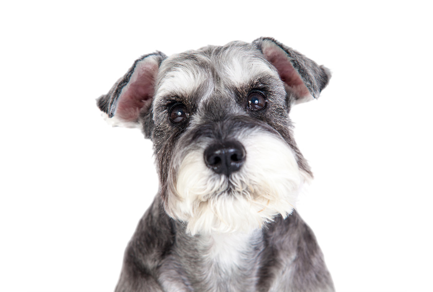
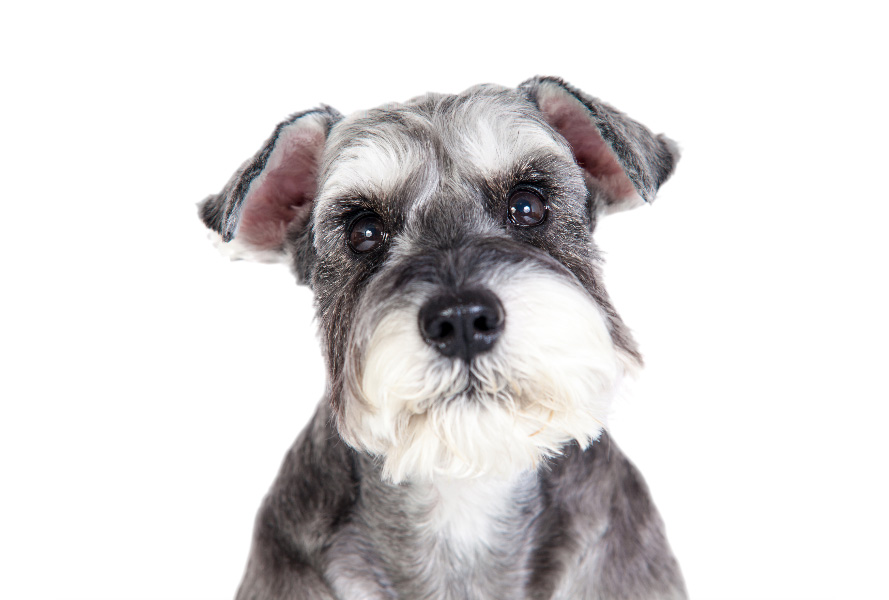

Los perros schnauzer son perros elegantes, ágiles y robustos, se caracteriza por su gran inteligencia y enorme lealtad.
Su origen se encuentra en Alemania, donde esta raza acompañaba los carruajes, cuidaba los establos y mataba roedores y otras alimañas.
Es muy apreciado como perro de compañía y para cuidar a los niños. A fines de los 1800, se presentó por primera vez a la raza en una exposición canina. Sin embargo, se la presentó como pinscher de pelo duro.
Posteriormente y haciendo alusión a su característica barba y bigote se le dio el nombre de schnauzer, que deriva de la palabra alemana “schnauze” que significa hocico
 
